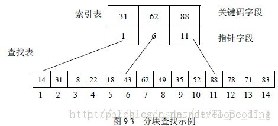

<!DOCTYPE html>


  <html class="light page-post">


<head><meta name="generator" content="Hexo 3.8.0">
  <meta charset="utf-8">
  
  <title>常用查找算法总结 | 胡思旺</title>

  <meta name="viewport" content="width=device-width, initial-scale=1, maximum-scale=1">

  
    <meta name="keywords" content="全栈,微服务,Java,Netty,Vue,机器学习,Python">
  

  <meta name="description" content="常用查找算法总结 通过给定一个关键词，查找指定数据集中等于给定值的记录或数据元素    线性表 线性表是数据结构的一种，一个线性表是n个具有相同特性的数据元素的有限序列  顺序查找  从线性表的一端开始顺序扫描，依次将扫描到的关键字与给定值key相比较，若相等则表示查找成功    若扫描结束仍没有找到关键字等于key的结点，表示查找失败     example12345678public int">
<meta property="og:type" content="article">
<meta property="og:title" content="常用查找算法总结">
<meta property="og:url" content="http://yoursite.com/2019/01/14/常用查找算法总结/index.html">
<meta property="og:site_name" content="胡思旺">
<meta property="og:description" content="常用查找算法总结 通过给定一个关键词，查找指定数据集中等于给定值的记录或数据元素    线性表 线性表是数据结构的一种，一个线性表是n个具有相同特性的数据元素的有限序列  顺序查找  从线性表的一端开始顺序扫描，依次将扫描到的关键字与给定值key相比较，若相等则表示查找成功    若扫描结束仍没有找到关键字等于key的结点，表示查找失败     example12345678public int">
<meta property="og:locale" content="default">
<meta property="og:image" content="http://yoursite.com/2019/01/14/常用查找算法总结/fk.jpg">
<meta property="og:updated_time" content="2019-01-14T03:00:23.033Z">
<meta name="twitter:card" content="summary">
<meta name="twitter:title" content="常用查找算法总结">
<meta name="twitter:description" content="常用查找算法总结 通过给定一个关键词，查找指定数据集中等于给定值的记录或数据元素    线性表 线性表是数据结构的一种，一个线性表是n个具有相同特性的数据元素的有限序列  顺序查找  从线性表的一端开始顺序扫描，依次将扫描到的关键字与给定值key相比较，若相等则表示查找成功    若扫描结束仍没有找到关键字等于key的结点，表示查找失败     example12345678public int">
<meta name="twitter:image" content="http://yoursite.com/2019/01/14/常用查找算法总结/fk.jpg">

  

  
    <link rel="icon" href="/favicon.ico">
  

  <link href="/css/styles.css?v=c114cben" rel="stylesheet">


  
    <link rel="stylesheet" href="/css/personal-style.css">
  

  

  
  <script type="text/javascript">
    var _hmt = _hmt || [];
    (function() {
      var hm = document.createElement("script");
      hm.src = "//hm.baidu.com/hm.js?57e94d016e201fba3603a8a2b0263af0";
      var s = document.getElementsByTagName("script")[0];
      s.parentNode.insertBefore(hm, s);
    })();
  </script>


  
  <script type="text/javascript">
	(function(){
	    var bp = document.createElement('script');
	    var curProtocol = window.location.protocol.split(':')[0];
	    if (curProtocol === 'https') {
	        bp.src = 'https://zz.bdstatic.com/linksubmit/push.js';        
	    }
	    else {
	        bp.src = 'http://push.zhanzhang.baidu.com/push.js';
	    }
	    var s = document.getElementsByTagName("script")[0];
	    s.parentNode.insertBefore(bp, s);
	})();
  </script>


  

</head>
</html>
<body>


  
    <span id="toolbox-mobile" class="toolbox-mobile">盒子</span>
  

  <div class="post-header CENTER">
   
  <div class="toolbox">
    <a class="toolbox-entry" href="/">
      <span class="toolbox-entry-text">盒子</span>
      <i class="icon-angle-down"></i>
      <i class="icon-home"></i>
    </a>
    <ul class="list-toolbox">
      
        <li class="item-toolbox">
          <a class="CIRCLE" href="/archives/" rel="noopener noreferrer" target="_self">
            博客
          </a>
        </li>
      
        <li class="item-toolbox">
          <a class="CIRCLE" href="/project/" rel="noopener noreferrer" target="_self">
            项目
          </a>
        </li>
      
        <li class="item-toolbox">
          <a class="CIRCLE" href="/category/" rel="noopener noreferrer" target="_self">
            分类
          </a>
        </li>
      
        <li class="item-toolbox">
          <a class="CIRCLE" href="/search/" rel="noopener noreferrer" target="_self">
            搜索
          </a>
        </li>
      
        <li class="item-toolbox">
          <a class="CIRCLE" href="/about/" rel="noopener noreferrer" target="_self">
            联系
          </a>
        </li>
      
    </ul>
  </div>


</div>


  <div id="toc" class="toc-article">
    <strong class="toc-title">文章目录</strong>
    <ol class="toc"><li class="toc-item toc-level-1"><a class="toc-link" href="#常用查找算法总结"><span class="toc-text">常用查找算法总结</span></a><ol class="toc-child"><li class="toc-item toc-level-2"><a class="toc-link" href="#线性表"><span class="toc-text">线性表</span></a><ol class="toc-child"><li class="toc-item toc-level-3"><a class="toc-link" href="#顺序查找"><span class="toc-text">顺序查找</span></a></li><li class="toc-item toc-level-3"><a class="toc-link" href="#二分查找"><span class="toc-text">二分查找</span></a></li><li class="toc-item toc-level-3"><a class="toc-link" href="#分块查找"><span class="toc-text">分块查找</span></a></li></ol></li></ol></li></ol>
  </div>


<div class="content content-post CENTER">
   <article id="post-常用查找算法总结" class="article article-type-post" itemprop="blogPost">
  <header class="article-header">
    <h1 class="post-title">常用查找算法总结</h1>

    <div class="article-meta">
      <span>
        <i class="icon-calendar"></i>
        <span>2019.01.14</span>
      </span>

      
        <span class="article-author">
          <i class="icon-user"></i>
          <span>siwang.hu</span>
        </span>
      

      
  <span class="article-category">
    <i class="icon-list"></i>
    <a class="article-category-link" href="/categories/实用算法/">实用算法</a>
  </span>


      
        <span>
          <i class="icon-comment"></i>
          <a href="http://www.github.com/siwanghu/2019/01/14/常用查找算法总结/#disqus_thread"></a>
        </span>
      

      
      
    </div>
  </header>

  <div class="article-content">
    
      <h1 id="常用查找算法总结"><a href="#常用查找算法总结" class="headerlink" title="常用查找算法总结"></a>常用查找算法总结</h1><blockquote>
<p>通过给定一个关键词，查找指定数据集中等于给定值的记录或数据元素  </p>
</blockquote>
<h2 id="线性表"><a href="#线性表" class="headerlink" title="线性表"></a>线性表</h2><blockquote>
<p>线性表是数据结构的一种，一个线性表是n个具有相同特性的数据元素的有限序列</p>
</blockquote>
<h3 id="顺序查找"><a href="#顺序查找" class="headerlink" title="顺序查找"></a>顺序查找</h3><blockquote>
<ul>
<li><p>从线性表的一端开始顺序扫描，依次将扫描到的关键字与给定值key相比较，若相等则表示查找成功  </p>
</li>
<li><p>若扫描结束仍没有找到关键字等于key的结点，表示查找失败  </p>
</li>
</ul>
<p><strong>example</strong><br><figure class="highlight plain"><table><tr><td class="gutter"><pre><span class="line">1</span><br><span class="line">2</span><br><span class="line">3</span><br><span class="line">4</span><br><span class="line">5</span><br><span class="line">6</span><br><span class="line">7</span><br><span class="line">8</span><br></pre></td><td class="code"><pre><span class="line">public int find(int[] array,int key)&#123;</span><br><span class="line">    for(int i=0;i&lt;array.length;i++)&#123;</span><br><span class="line">        if(array[i]==key)&#123;</span><br><span class="line">            return i;</span><br><span class="line">        &#125;</span><br><span class="line">    &#125;</span><br><span class="line">    return -1;</span><br><span class="line">&#125;</span><br></pre></td></tr></table></figure></p>
</blockquote>
<h3 id="二分查找"><a href="#二分查找" class="headerlink" title="二分查找"></a>二分查找</h3><blockquote>
<ul>
<li><p>二分查找又称折半查找，是效率比较高的查找  </p>
</li>
<li><p>线性表必须是有序的顺序存储结构表（链表不可以）  </p>
</li>
<li><p>将表中间位置记录的关键字与查找关键字比较，如果两者相等，则查找成功  </p>
</li>
<li><p>否则利用中间位置记录将表分成前、后两个子表，如果中间位置的关键字大于查找关键字，则查找前一子表，否则查找后一子表  </p>
</li>
<li><p>重复以上过程，直到找到满足条件的记录，使查找成功；或直到子表不存在为止，此时查找不成功  </p>
</li>
</ul>
<p><strong>example</strong><br><figure class="highlight plain"><table><tr><td class="gutter"><pre><span class="line">1</span><br><span class="line">2</span><br><span class="line">3</span><br><span class="line">4</span><br><span class="line">5</span><br><span class="line">6</span><br><span class="line">7</span><br><span class="line">8</span><br><span class="line">9</span><br><span class="line">10</span><br><span class="line">11</span><br><span class="line">12</span><br><span class="line">13</span><br><span class="line">14</span><br></pre></td><td class="code"><pre><span class="line">public int binaryFind(int[] array,int key)&#123;</span><br><span class="line">    int low=0,high=array.length-1,mid;</span><br><span class="line">    while(low&lt;=high)&#123;</span><br><span class="line">        mid=(low+high)/2;</span><br><span class="line">        if(array[mid]==key)&#123;</span><br><span class="line">            return mid;</span><br><span class="line">        &#125;else if(array[mid]&gt;key)&#123;</span><br><span class="line">            high=mid-1;</span><br><span class="line">        &#125;else &#123;</span><br><span class="line">            low=mid+1;</span><br><span class="line">        &#125;</span><br><span class="line">    &#125;</span><br><span class="line">    return -1;</span><br><span class="line">&#125;</span><br></pre></td></tr></table></figure></p>
</blockquote>
<h3 id="分块查找"><a href="#分块查找" class="headerlink" title="分块查找"></a>分块查找</h3><blockquote>
<ul>
<li><p>分块查找(Blocking Search)又称索引顺序查找  </p>
</li>
<li><p>分块查找由于只要求索引表是有序的，对块内节点没有排序要求，因此特别适合于<strong>节点动态变化的情况</strong>  </p>
</li>
<li><p>分块查找表是分块有序的，我们可以通过索引表来锁定关键字所在的区间，查找索引可以使用顺序查找或二分查找  </p>
</li>
<li><p>因为块中不一定是有序的，所以只能使用顺序查找  </p>
</li>
</ul>
<p>  </p>
</blockquote>

    
  </div>

</article>


   
  <div class="text-center donation">
    <div class="inner-donation">
      <span class="btn-donation">支持一下</span>
      <div class="donation-body">
        <div class="tip text-center">扫一扫，支持胡思旺</div>
        <ul>
        
          <li class="item">
            
              <span>微信扫一扫</span>
            
            
          </li>
        
          <li class="item">
            
              <span>支付宝扫一扫</span>
            
            
          </li>
        
        </ul>
      </div>
    </div>
  </div>


   
  <div class="box-prev-next clearfix">
    <a class="show pull-left" href="/2019/01/09/OAuth2授权总结/">
        <i class="icon icon-angle-left"></i>
    </a>
    <a class="hide pull-right" href="/">
        <i class="icon icon-angle-right"></i>
    </a>
  </div>


   
      <div class="git"></div>
   
</div>


  <a id="backTop" class="back-top">
    <i class="icon-angle-up"></i>
  </a>


  <div class="modal" id="modal">
  <span id="cover" class="cover hide"></span>
  <div id="modal-dialog" class="modal-dialog hide-dialog">
    <div class="modal-header">
      <span id="close" class="btn-close">关闭</span>
    </div>
    <hr>
    <div class="modal-body">
      <ul class="list-toolbox">
        
          <li class="item-toolbox">
            <a class="CIRCLE" href="/archives/" rel="noopener noreferrer" target="_self">
              博客
            </a>
          </li>
        
          <li class="item-toolbox">
            <a class="CIRCLE" href="/project/" rel="noopener noreferrer" target="_self">
              项目
            </a>
          </li>
        
          <li class="item-toolbox">
            <a class="CIRCLE" href="/category/" rel="noopener noreferrer" target="_self">
              分类
            </a>
          </li>
        
          <li class="item-toolbox">
            <a class="CIRCLE" href="/search/" rel="noopener noreferrer" target="_self">
              搜索
            </a>
          </li>
        
          <li class="item-toolbox">
            <a class="CIRCLE" href="/about/" rel="noopener noreferrer" target="_self">
              联系
            </a>
          </li>
        
      </ul>

    </div>
  </div>
</div>


  
      <div class="fexo-comments comments-post">
    
  <section class="disqus-comments">
    <div id="disqus_thread">
      <noscript>Please enable JavaScript to view the <a href="//disqus.com/?ref_noscript">comments powered by Disqus.</a></noscript>
    </div>
  </section>

  <script>
    var disqus_shortname = 'forsigner';
    
    var disqus_url = 'http://yoursite.com/2019/01/14/常用查找算法总结/';
    
    (function(){
      var dsq = document.createElement('script');
      dsq.type = 'text/javascript';
      dsq.async = true;
      dsq.src = '//' + disqus_shortname + '.disqus.com/embed.js';
      (document.getElementsByTagName('head')[0] || document.getElementsByTagName('body')[0]).appendChild(dsq);
    })();
  </script>

  <script id="dsq-count-scr" src="//forsigner.disqus.com/count.js" async></script>


    

    
    

    

    
    

  </div>

  

  <script type="text/javascript">
  function loadScript(url, callback) {
    var script = document.createElement('script')
    script.type = 'text/javascript';

    if (script.readyState) { //IE
      script.onreadystatechange = function() {
        if (script.readyState == 'loaded' ||
          script.readyState == 'complete') {
          script.onreadystatechange = null;
          callback();
        }
      };
    } else { //Others
      script.onload = function() {
        callback();
      };
    }

    script.src = url;
    document.getElementsByTagName('head')[0].appendChild(script);
  }

  window.onload = function() {
    loadScript('/js/bundle.js?235683', function() {
      // load success
    });
  }
</script>

</body>
</html>
